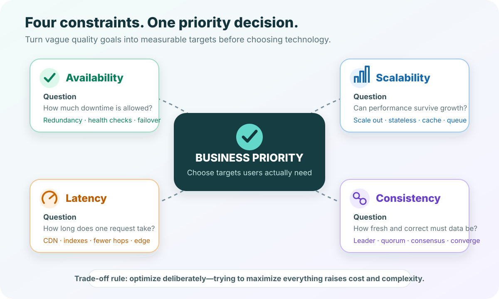
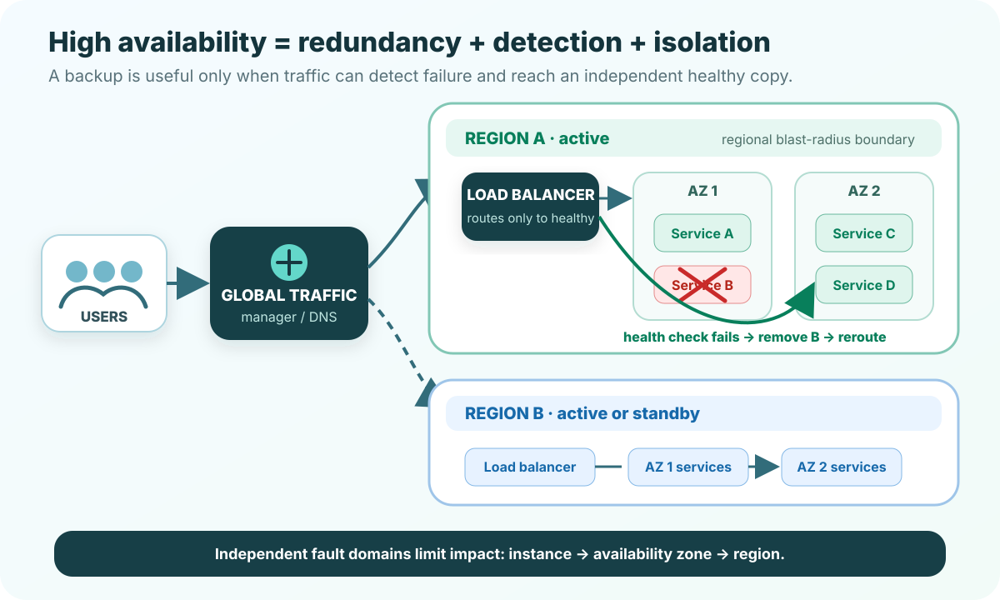
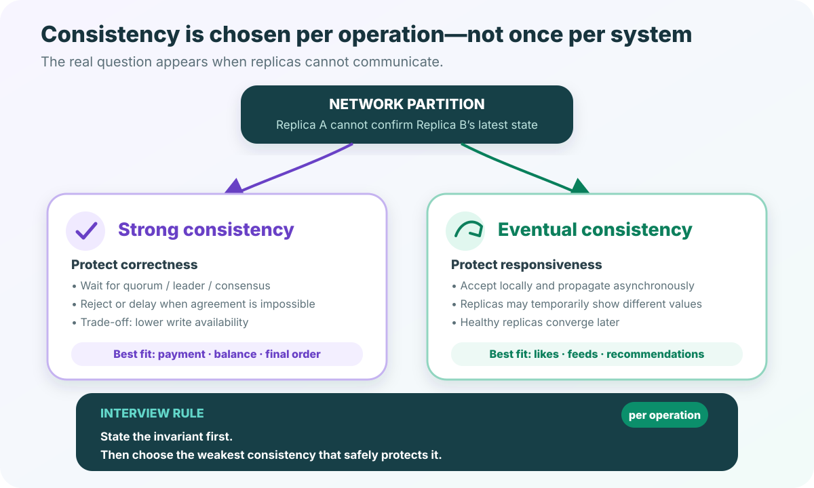
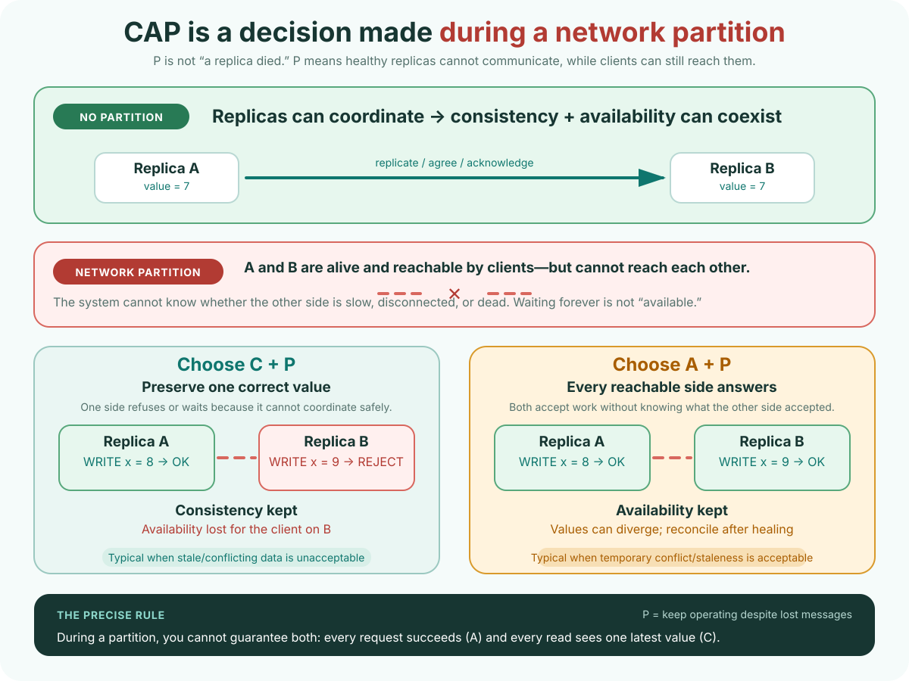

System Design · RoadMap ID 2 · Pre-reading
Twenty-four scenario questions covering every concept in the primer: availability, scalability, latency, consistency, their design patterns, and the trade-offs between them. Predict first; answers and explanations stay hidden until submission.
This is intentionally not pass/fail. Wrong answers reveal what your attention should lock onto when you read the primer. The quiz includes both direct recall and small architecture decisions.
First-attempt rule: use no notes and do not open the primer yet. Time-box yourself to 25–35 minutes. Your selections are saved in this browser while you work; after submitting, send the completion code back to your coach.
Use these diagrams after submitting the baseline. Together they show how to frame NFRs, contain failures, and choose consistency by operation.




The questions follow the attached System Design School primer. These authoritative references were used only to check calculations and sharpen the explanations: